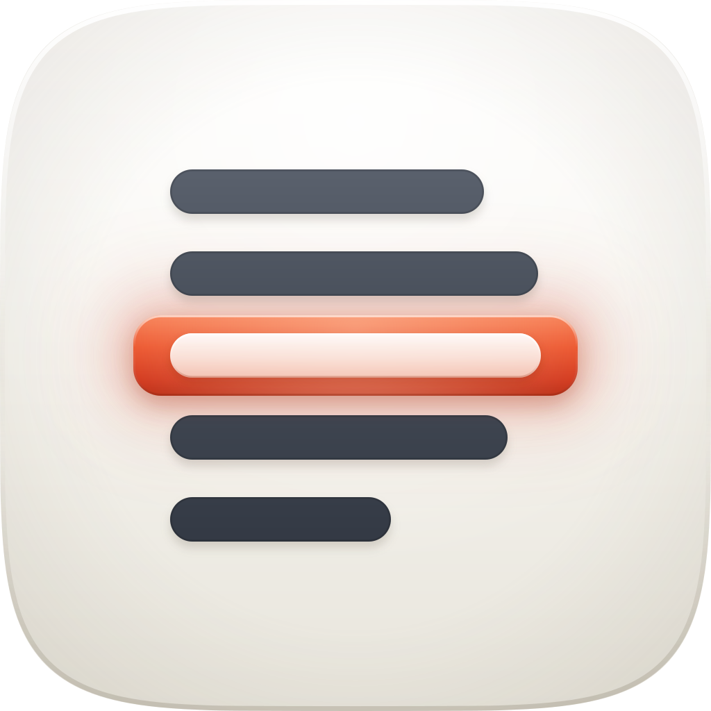
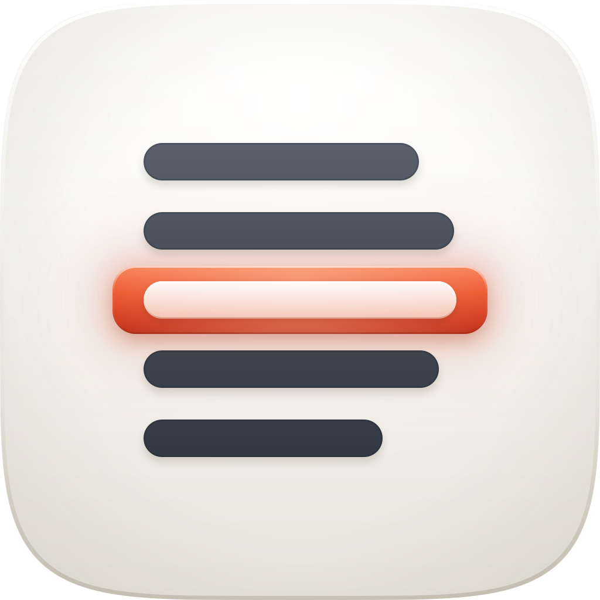
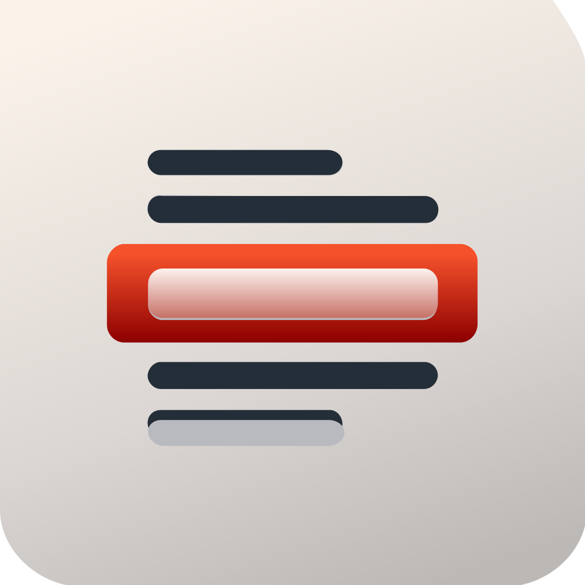
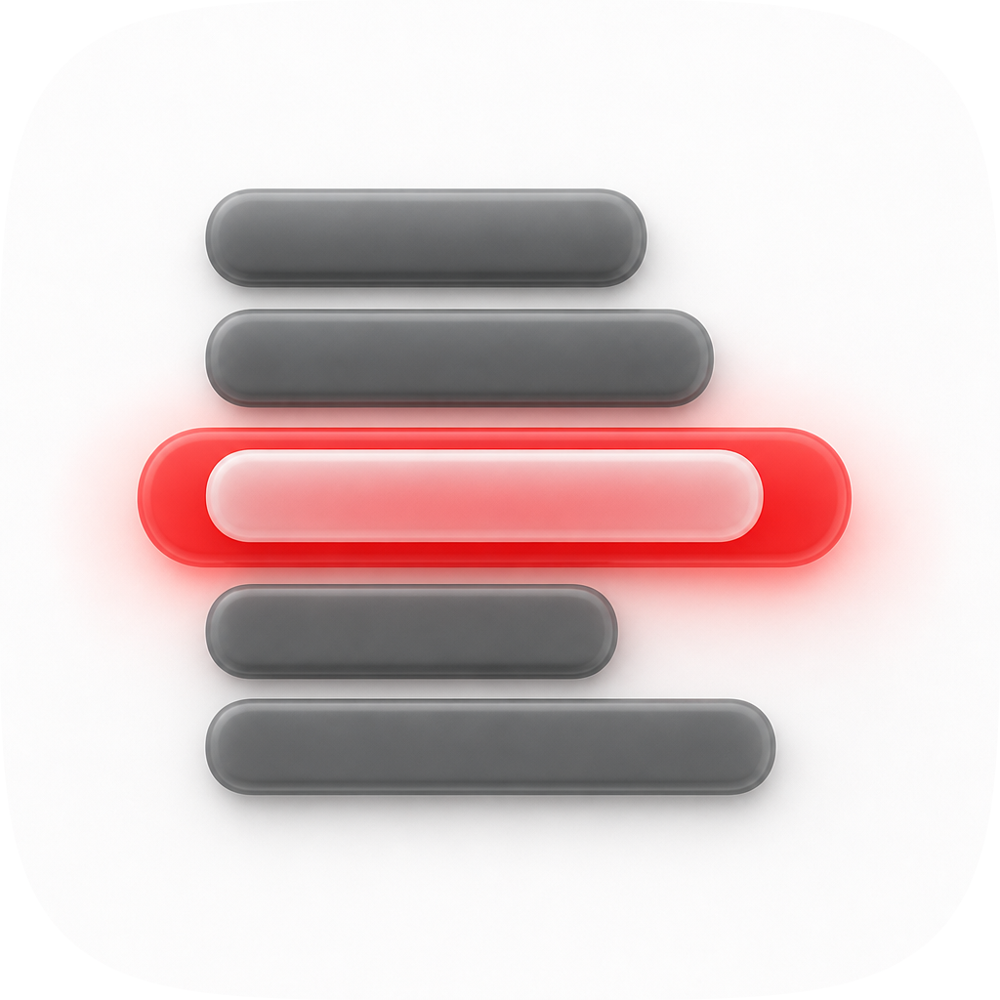
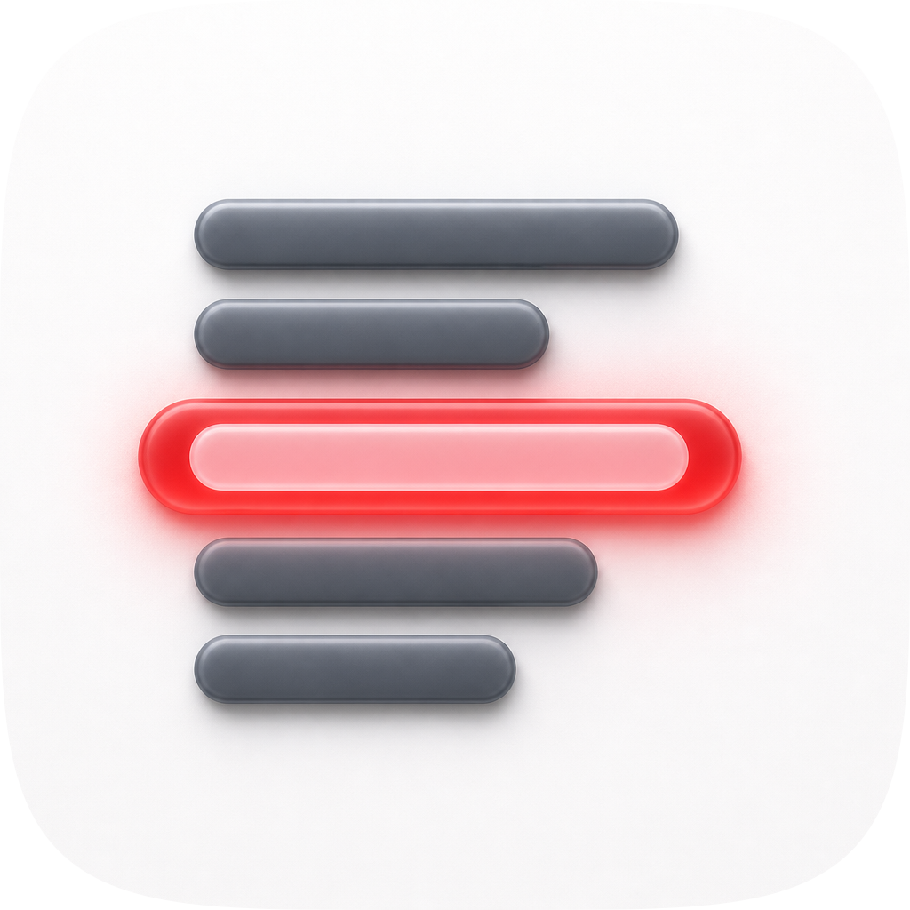
| Take | Renders at 128 / 64 / 48 / 32 / 16 css px (2× retina sources), plus the 16px squint magnified | Rubric | Verdict |
|---|---|---|---|
| A-v2 · icon.svgEngine A, hand-authored layered SVG, SHIPS |
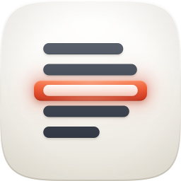 |
11 / 12 | Porcelain cushion tile, four graphite entry lines ragged like prose with the last one trailing short, one vermilion seal band landed on the middle line with that entry knocked out in frosted white so the seal's hue bleeds through it. Checks 1–4 pass on real renders: full-bleed 1024 with the squircle as a clip, glyph 640×536 optically centred with 192px side margins, silhouette nameable as a page with one marked line, and the white core survives inside the seal at 16px. Layers #bg/#mid/#fg/#highlight map 1:1 onto Icon Composer. Sole deduction on #7: see the recommendation. |
| A-v1 · icon-v1.svgEngine A, first pass |
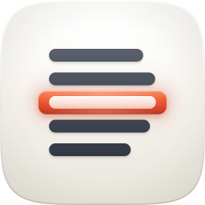 |
10 / 12 | Same composition with milder line-length variance (470/530/504/408, a 1.31× range against v2's 1.67×) and an ink halo at roughly half the opacity. Read closer to an equalizer or a list widget than a page of text, and the declared signature's second half was doing no visible work. Lost to v2 on #11 personality and on plain subject fidelity: a paragraph ends on a short line, and restoring that is what makes the stack read as a record rather than a chart. |
| B · icon-engineB-arrow-4683c4.svgEngine B, Arrow 1.1 vector take |
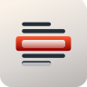 |
6 / 12 | Hard-fails #1: it baked its own corner mask with visibly unequal radii, which is the one thing the spec forbade in as many words. Also fails #5 (a diagonal ground gradient under vertically-lit gel), #6 (beige ground, graphite, red and a stray chrome-filled bottom bar make four families), #8 and #9 (hard gloss sweep into a maroon foot, Aqua-era drag). Salvaged into the master: nothing drawn, but it independently arrived at the same seal-overhangs-its-neighbours proportion, which confirmed that read was legible rather than a habit of mine. |
| C1 · icon-engineC-4da0c8.pngEngine C, GPT Image 2 raster, corpus-referenced |
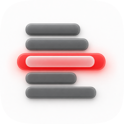 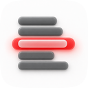 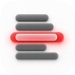 |
8 / 12 | Hard-fails #4: the neon halo blooms across the row gaps and the line separation is gone by 16px, visible in the magnification beside it. Also fails #5 and #9 (a hot emissive rim fighting the top light; a dead-flat white ground with no cushion, which is Tahoe tell #1 missed outright) and #10 (flat pre-masked raster whose identity is a colour relationship). Took the two corpus porcelain exemplars and returned page-white anyway. Salvaged: its line-length variance was wider than my v1's and read more like text, which drove the v2 width pass. |
| C2 · icon-engineC-7896e3-2.pngEngine C, GPT Image 2 raster, second take |
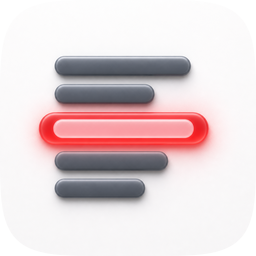 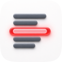 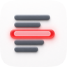 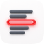 |
8 / 12 | The better material take of the pair: real soft-extruded gel on the graphite bars with honest contact shadows, and the frosted core inside the seal is the closest any engine got to the intended overlap. Fails the same four as C1, and its red is hotter still, landing squarely on the alert-red reading the whole direction was built to avoid. Salvaged into the master: confirmation that the frosted-core-inside-the-seal move renders convincingly, which is why the master's frostGrad carries the seal's hue into its lower half rather than sitting flat white. |
python3 audit_sheet.py render <dir> (1024 / 256 / 128 / 96 / 64 / 32 sources); verified by its check subcommand.icon.svg as it still stands — the master has not changed since. Re-rendered on 19 Aug 2026 to add the 128px and 96px sources (and so the 64 and 48 css-px display rows) and the 1024px hero row, which the earlier sheet rendered but never showed. Nothing in the verdicts was re-judged; the two new display rows are additional evidence for the same master, not a second opinion on it.